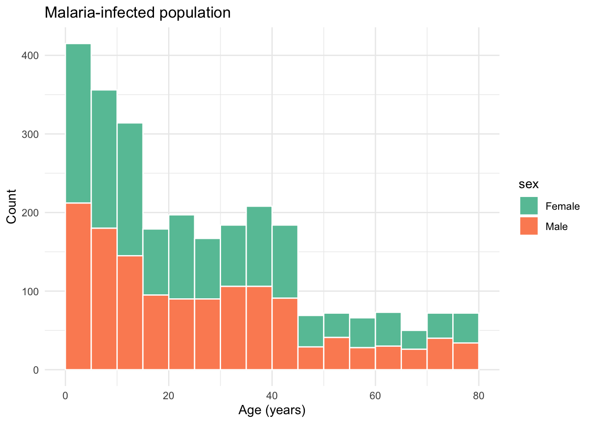
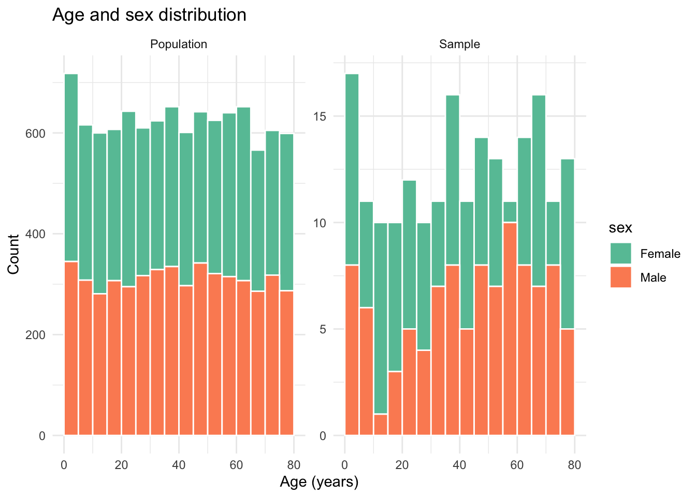
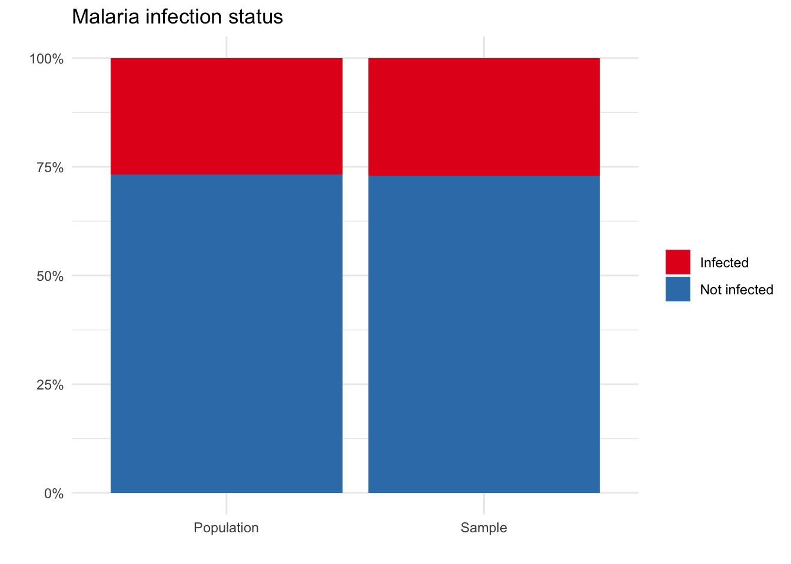
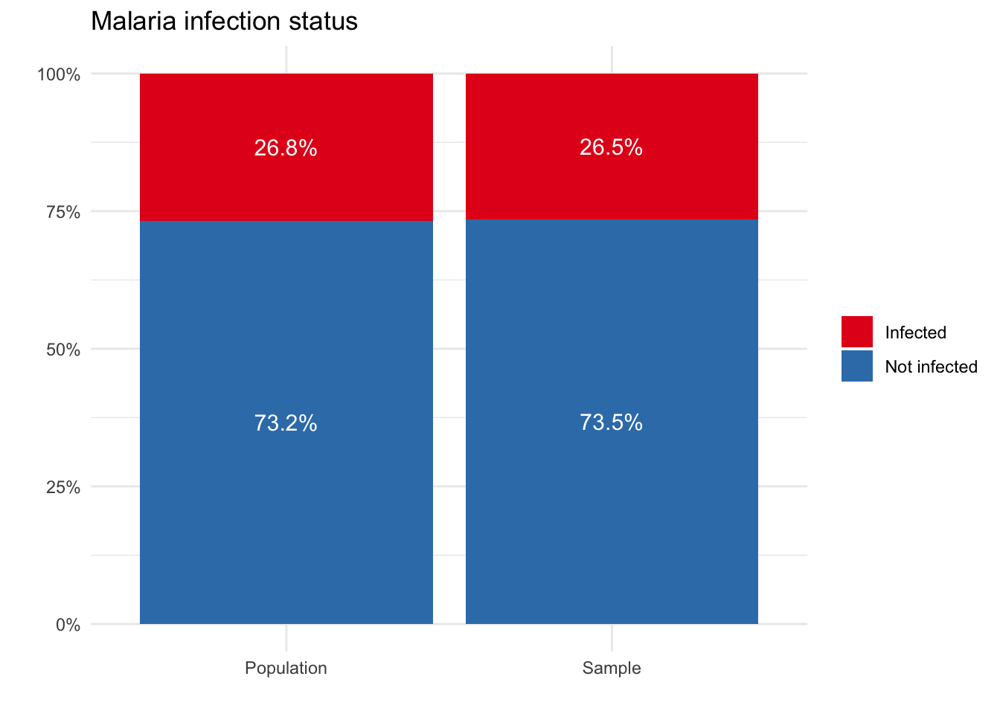
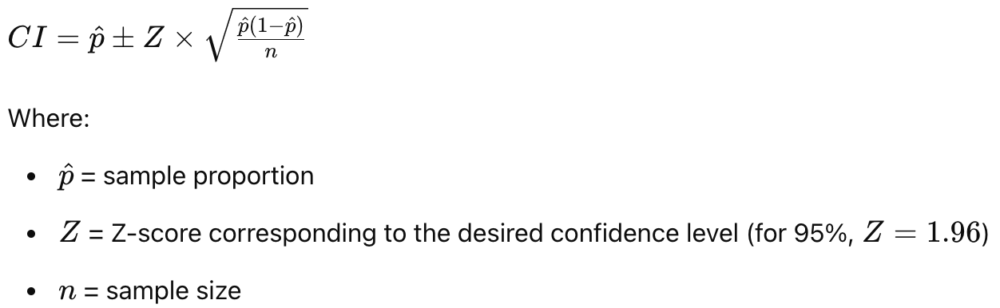
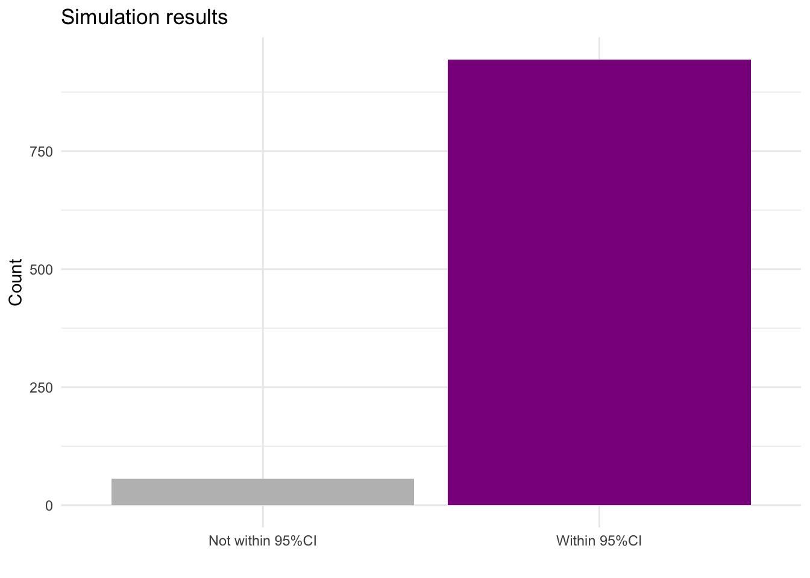

# fake census data
N <- 10000
set.seed(1234)
census <- data.frame(
id = 1:N,
age = sample(0:80, N, replace = TRUE), # not really realistic, eg 'young population' but maybe OK for these purposes?
sex = sample(c("Male", "Female"), N, replace = TRUE) #,
# malaria_infection = sample(c("Infected", "Not infected"), N, replace = TRUE, prob = c(0.3, 0.7)
)
census <- census %>%
# infection probability higher in children
mutate(infection_prob = case_when(age >=0 & age <= 14 ~ 0.60,
age > 14 & age <=44 ~ 0.30,
age > 44 ~ 0.10,
TRUE ~ 0.25),
malaria_infection = ifelse(runif(n()) <= infection_prob, "Infected", "Not infected")) %>%
select(-infection_prob)
infected_pop <- census %>% filter(malaria_infection == "Infected")Module 2: Sampling from a population
Introduction
Welcome to Module 2: Sampling from a population. In this module, we’ll explore how to relate samples to populations, calculate confidence intervals, and understand the impact of sample size on study results.
Same arguments for prevalence of malaria vs markers etc. We are starting with a simple example….
Learning Outcomes
By the end of this tutorial, you will be able to:
- Define the target population for a study.
- Differentiate between a population and a sample.
- Calculate the 95% confidence interval.
- Assess how sampling variability impacts the representation of the population.
- Understand the effect of sample size on confidence intervals.
What is my population?
In any study, clearly defining the target population is crucial. Let’s consider a few examples of made-up studies.
QUIZ Study 1
We want to estimate the prevalence of malaria infection in a community of 10,0000 people. Which of the following is the target population?
- All residents
- Only women or only men
- Only children under 5 years old
- Adults over 60 years old
QUIZ Study 2
QUIZ Study 3
Relating the sample to the population
It is often not feasible to sample the entire population, for example, due to costs or difficulty in sampling everyone. The good thing is we can design our study so that our target population is a representative sample of our population.
Using the population census
Let’s go back to our made-up study. We now have access to a census of the entire population.
We have a census of the entire population of the village (n=10,000) with information each residents age and sex.
kable(head(census))| id | age | sex | malaria_infection |
|---|---|---|---|
| 1 | 27 | Male | Not infected |
| 2 | 79 | Female | Not infected |
| 3 | 21 | Female | Infected |
| 4 | 8 | Female | Not infected |
| 5 | 4 | Male | Not infected |
| 6 | 37 | Male | Infected |
For purposes of this tutorial we “know” the true infection status of every individual, there are 2678 people in the village with malaria infections.
census %>%
count(malaria_infection) %>%
ggplot(aes(x = malaria_infection, y = n, fill = malaria_infection)) +
geom_bar(stat = "identity") +
scale_fill_brewer(palette = "Set1") +
labs(title = "Malaria infection status", x = "", y = "Count") +
guides(fill = F) +
theme_minimal()
Let’s look at the age and sex distribution.
infected_pop %>%
ggplot(aes(x = age, fill = sex)) +
geom_histogram(binwidth = 5, color = "white", boundary = 0) +
scale_fill_brewer(palette = "Set2") +
labs(title = "Malaria-infected population", x = "Age (years)", y = "Count") +
theme_minimal()
Small sample sizes
Suppose we have resources to sequence 200 samples. Let’s randomly sample 200 individuals from the population and see
sampleFromPopulation <- function(sample_size, census){
ss <- sample_size
sample_data <- census %>% sample_n(ss, replace = F) # sample without replacement
comparison <- bind_rows(
census %>% mutate(group = "Population") %>% select(age, sex, malaria_infection, group),
sample_data %>% mutate(group = "Sample") %>% select(age, sex, malaria_infection, group))
return(comparison)
}Let’s take a look at the demographics of our sample. Do we see a similar age and sex distribution? Run this a few times with the sample size of 200 to see how it changes.
sample_size <- 200
comparison <- sampleFromPopulation(sample_size, census)
comparison %>%
ggplot(aes(x = age, fill = sex)) +
geom_histogram(binwidth = 5, color = "white", boundary = 0) +
scale_fill_brewer(palette = "Set2") +
labs(title = "Age and sex distribution", x = "Age (years)", y = "Count") +
theme_minimal() +
facet_wrap(~group, scales = "free_y")
comparison %>%
count(group, malaria_infection) %>%
ggplot(aes(x = group, y = n, fill = malaria_infection)) +
geom_bar(stat = "identity", position = "fill") +
scale_fill_brewer(palette = "Set1", name = NULL) +
scale_y_continuous(labels = scales::percent) +
labs(title = "Malaria infection status", x = "", y = "") +
theme_minimal()
n_sim <- 1000
# Vector to store sample proportions
sample_proportions <- numeric(n_sim)
for (i in 1:n_sim) {
sample_data <- census %>% sample_n(sample_size, replace = F)
# Calculate sample proportion
p_hat <- mean(sample_data$malaria_infection == "Infected")
# Store the sample proportion
sample_proportions[i] <- p_hat
}
# Calculate the mean and standard deviation of sample proportions
mean_p_hat <- mean(sample_proportions)
sd_p_hat <- sd(sample_proportions)
# Display the results
cat("Mean of sample proportions:", mean_p_hat, "\n")Mean of sample proportions: 0.269395 cat("Standard deviation of sample proportions:", sd_p_hat, "\n")Standard deviation of sample proportions: 0.03018477 # Plot histogram of sample proportions
hist(sample_proportions, breaks = 30, main = "Distribution of Sample Proportions", xlab = "Sample Proportion of Infected Individuals")
QUIZ
Is the sample always the same? (TRUE/FALSE)
REFLECT (with hint):
- Interpretation text
Does the demography always look like the population? Can you ever generate a sample that looks systematically different from the population?
You should see that the sample differs from the population. Does that mean our sampling approach is biased? Hint: No it does not
What do you notice about the demographics of the sample? Does it always reflect the population?
- Hint: We have a lot of uncertainty with small sample sizes
Calculating the 95% confidence interval
Our next topic focuses on calculating the 95% confidence interval (CI) using the Wald method. We will estimate the prevalence of malaria in our sample and calculate its 95% CI.
set.seed(5)
sample_data <- census %>% sample_n(200)Wald confidence interval formula TODO: FIGURE OUT LATEX HERE
CI = Z

Don’t worry, we will decompose this formula step-by-step!
Sample proportion, phat
In our example, the sample proportion refers to the number of infected individuals in our sample. We calculate this by dividing the number of infected individuals in the sample by the total sample size.
# Number of infected individuals in the sample
infected_count <- sum(sample_data$malaria_infection == "Infected")
infected_count[1] 69# Sample proportion
p_hat <- infected_count / sample_size
p_hat[1] 0.345Sample size, n
In our example, our sample size was n=200.
Calculating the standard error
We need to
SE <- sqrt((p_hat * (1 - p_hat)) / sample_size)
SE[1] 0.03361361Our standard error is 0.0336136.
Calculating the confidence interval
To get the 95% CI we need to calculate our lower and upper bounds. We use the Z-score for 95% confidence, which is 1.96.
# Z-score for 95% confidence
Z <- 1.96Let’s start by calculating our lower bound:
CI_lower <- p_hat - Z * SEOur lower CI bound is: 0.2791173 or 27.91%.
Now let’s calculate the upper bound:
CI_upper <- p_hat + Z * SEOur upper CI bound is: 0.4108827 or 41.09%.
CI <- data.frame(
Lower = CI_lower,
Estimate = p_hat,
Upper = CI_upper
)So, we can now say our estimated prevalence is 0.345 or 34.5% and our 95%CI is 27.91% to 41.09%.
Comparison to true prevalence estimate
true_infected_count <- sum(census$malaria_infection == "Infected")
true_prevalence <- true_infected_count / NThe true prevalence is 0.2678 or 26.78%
QUIZ Does our estimate fall within the 95%CI?
- Yes/No
How often does true prevalence fall within the 95%CI?
Let’s explore this question by running a simulation and counting how many times our estimated prevalence is withing the 95%CI or not. - we’ve only done 1 example, now let’s do lots
# simulation
n_sim <- 1000
sample_size <- 200
simulate_CI <- function(census, sample_size, true_prevalence) {
sample_data <- census %>% sample_n(sample_size, replace = F)
infected_count <- sum(sample_data$malaria_infection == "Infected")
p_hat <- infected_count / sample_size
SE <- sqrt((p_hat * (1 - p_hat)) / sample_size)
CI_lower <- p_hat - Z * SE
CI_upper <- p_hat + Z * SE
(true_prevalence >= CI_lower) & (true_prevalence <= CI_upper)
}
results <- replicate(n_sim, simulate_CI(census, sample_size, true_prevalence))
mean(results) # coverage prob[1] 0.944results_df <- data.frame(result = results) %>%
mutate(result = case_when(result == FALSE ~ "Not within 95%CI",
result == TRUE ~ "Within 95%CI"))
results_df %>%
ggplot(aes(x = result, fill = result)) +
geom_bar() +
scale_fill_manual(values = c("Not within 95%CI" = "grey", "Within 95%CI" = "magenta4")) +
labs(title = "Simulation results", x = "", y = "Count") +
guides(fill = F) +
theme_minimal()
Bonus
- open from code (do it yourself with hints), repeat for sample size of eg 500